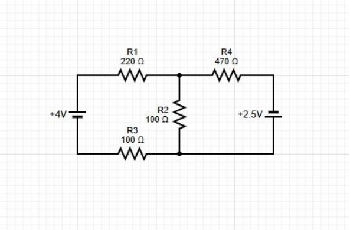

Kirchhoff’s Laws
Experiment 8 · Circuit 1
David Dreyer · PHYS 210 X01A
Objective
To determine the currents in a three-branch DC circuit using Cramer’s rule, compare them with currents calculated from measured resistor voltages, and test Kirchhoff’s current and voltage laws with measurement uncertainties.
Circuit and method

Figure 1. Original manual circuit 1, PDF page 106. The longer battery line is positive.
The supplied data contain four resistance measurements and six voltage measurements for the first circuit. The selected instrument is a Fluke 177 on the 600 Ω and 6 V DC ranges. Analysis uses measured resistance and supply voltage values. No additional bench observations were supplied.
Let a be the upper centre junction and b the lower centre junction. Reference currents JL, JM and JR all run from a to b through the left, middle and right branches. I1 = I3 = JL, I2 = JM and I4 = JR. E1 is positive at its top terminal; E2 is positive at its bottom terminal.
Polarity assumption: all voltages in the photograph are positive. They are treated as magnitudes, giving U1 = −2.445 V, U3 = −1.129 V, U2 = +0.482 V and U4 = +3.002 V in the reference directions. This interpretation requires confirmation of the actual probe connections. The original values are retained in the data table and workbook.
Measurements and uncertainties
Table 1 preserves the photographed readings. Uncertainties below retain guard digits for calculation; they are instrument limits, not statistical standard deviations.
| Element | R (Ω) | ΔR (Ω) | Photo V (V) | ΔV (V) |
|---|---|---|---|---|
| E1 | — | — | 4.086 | 0.0056774 |
| E2 | — | — | 2.51 | 0.0042590 |
| R1 | 218 | 2.1620 | 2.445 | 0.0042005 |
| R2 | 100.6 | 1.1054 | 0.482 | 0.0024338 |
| R3 | 100.3 | 1.1027 | 1.129 | 0.0030161 |
| R4 | 468.4 | 4.4156 | 3.002 | 0.0047018 |
ΔR = 0.009|R| + 0.2 Ω; ΔU = 0.0009|U| + 0.002 V
For R1:
ΔR1 = 0.009(218) + 0.2 = 2.162 Ω
ΔU1 = 0.0009(2.445) + 0.002 = 0.0042005 V
I1 = −2.445/218 = −0.011215596 A
ΔI1 = 0.0042005/218 + 2.445(2.162)/218²
= 0.000130498 A = 0.130498 mA
With uncertainty rounded to one significant figure, I1 = (−11.2 ± 0.1) mA. The unrounded uncertainty is used in comparisons; rounding must not change a consistency decision.
| Resistor | Current, guard digits (mA) | Final current (mA) |
|---|---|---|
| R1 | −11.215596 ± 0.130498 | −11.2 ± 0.1 |
| R2 | +4.791252 ± 0.076839 | +4.79 ± 0.08 |
| R3 | −11.256231 ± 0.153822 | −11.3 ± 0.2 |
| R4 | +6.409052 ± 0.070456 | +6.41 ± 0.07 |
Under the magnitude interpretation, current flows left → right through R1, right → left through R3, top → bottom through R2, and left → right through R4. The left branch therefore runs from b to a.
Theoretical currents and comparison
The independent equations follow from one junction and two loops:
JL + JM + JR = 0
318.3JL − 100.6JM = −4.086
100.6JM − 468.4JR = −2.510
Currents in these equations are in amperes. The coefficient matrix and source vector are:
| Row | JL coefficient | JM coefficient | JR coefficient | Source |
|---|---|---|---|---|
| 1 | 1 | 1 | 1 | 0 |
| 2 | 318.3 | −100.6 | 0 | −4.086 |
| 3 | 0 | 100.6 | −468.4 | −2.510 |
Cramer’s rule replaces each current column by the source vector. For D = det(A), JL = DL/D, JM = DM/D and JR = DR/D:
D = (−100.6)(−468.4) − (318.3)(−468.4)
+ (318.3)(100.6) = 228233.74
DL = −4.086(468.4 + 100.6) − 100.6(2.510) = −2577.4400
DM = 4.086(468.4) − 318.3(2.510) = 1114.9494
DR = 318.3(2.510) + 100.6(4.086 + 2.510) = 1462.4906
JL = −11.292984 mA; JM = +4.885121 mA; JR = +6.407863 mA
For the comparison below, theoretical currents are treated as exact, following the course simplified-handout convention: |Iexp − Ith| < ΔIexp. This is a comparison convention, not a claim that measured E and R have zero uncertainty.
| Resistor | Itheory (mA) | Difference (mA) | ΔIexp (mA) | Consistent? |
|---|---|---|---|---|
| R1 | −11.292984 | 0.077388 | 0.130498 | Yes |
| R2 | +4.885121 | 0.093868 | 0.076839 | No |
| R3 | −11.292984 | 0.036753 | 0.153822 | Yes |
| R4 | +6.407863 | 0.001189 | 0.070456 | Yes |
R2 is lower than the theoretical prediction by 0.093868 mA, about 1.92%. This exceeds its assigned uncertainty by 0.017029 mA. The other three resistor currents are consistent under this convention.
Kirchhoff checks and discussion
The following residuals use experimental currents and voltages. Absolute uncertainties are added. A check is consistent when its residual interval contains zero. Loop sums use voltage drops along a → b in the first branch and return through the second; this reverses every sign relative to a voltage-rise convention without changing the test.
| Check | Expression | Residual ± limit | Zero? |
|---|---|---|---|
| Node a | I1 + I2 + I4 | −0.015292 ± 0.277794 mA | Yes |
| Node b | −(I3 + I2 + I4) | +0.055927 ± 0.301118 mA | Yes |
| Series | I1 − I3 | +0.040635 ± 0.284320 mA | Yes |
| Loop 1: left–middle | U1 + E1 + U3 − U2 | +0.030000 ± 0.015328 V | No |
| Loop 2: middle–right | U2 − U4 + E2 | −0.010000 ± 0.011395 V | Yes |
| Loop 3: left–right | U1 + E1 + U3 − U4 + E2 | +0.020000 ± 0.021855 V | Yes |
For example, loop 1 gives −2.445 + 4.086 − 1.129 − 0.482 = +0.030 V. Its uncertainty is 0.0042005 + 0.0056774 + 0.0030161 + 0.0024338 = 0.0153278 V. The interval [0.0146722, 0.0453278] V excludes zero. Loop 3 is the sum of loops 1 and 2, so it is not an independent verification.
Complete worked calculations
Values below retain guard digits. Final rounded currents are in the results table above.
R1
R2
R3
R4
Supply uncertainties
Current consistency checks
Following the stated exact-theory convention, compare the absolute difference with the experimental current uncertainty:
R1: |-11.215596 − (-11.292984)| = 0.077388 mA < 0.130498 mA → consistent.
R2: |+4.791252 − (+4.885121)| = 0.093868 mA > 0.076839 mA → not consistent.
R3: |-11.256231 − (-11.292984)| = 0.036753 mA < 0.153822 mA → consistent.
R4: |+6.409052 − (+6.407863)| = 0.001189 mA < 0.070456 mA → consistent.
Junction and series-current checks
Node a
S = −11.215596 + 4.791252 + 6.409052
ΔS = 0.130498 + 0.076839 + 0.070456
S ± ΔS = −0.015292 ± 0.277794 mA. The interval contains zero.
Node b
S = −(−11.256231 + 4.791252 + 6.409052)
ΔS = 0.153822 + 0.076839 + 0.070456
S ± ΔS = +0.055927 ± 0.301118 mA. The interval contains zero.
R1 and R3
S = −11.215596 − (−11.256231)
ΔS = 0.130498 + 0.153822
S ± ΔS = +0.040635 ± 0.284320 mA. The interval contains zero.
All three voltage loops
Loop 1 · left–middle
S = −2.445 + 4.086 − 1.129 − 0.482
ΔS = 0.0042005 + 0.0056774 + 0.0030161 + 0.0024338
S ± ΔS = +0.030000 ± 0.0153278 V. Zero is outside the interval; not consistent.
Loop 2 · middle–right
S = 0.482 − 3.002 + 2.510
ΔS = 0.0024338 + 0.0047018 + 0.0042590
S ± ΔS = −0.010000 ± 0.0113946 V. Zero is within the interval; consistent.
Loop 3 · left–right
S = −2.445 + 4.086 − 1.129 − 3.002 + 2.510
ΔS = 0.0042005 + 0.0056774 + 0.0030161 + 0.0047018 + 0.0042590
S ± ΔS = +0.020000 ± 0.0218548 V. Zero is within the interval; consistent.
Discussion
Both junction residuals and the independently measured R1/R3 series currents agree within their combined uncertainties. Two loop sums agree with zero, while the left–middle loop differs by about 1.96 times its assigned uncertainty. This is an uncertainty-bound comparison, not a statistical significance test. The measurements therefore support KCL but do not fully verify KVL within the stated instrument limits.
The model neglects wire and contact resistance, voltmeter loading, supply changes between readings, and resistance changes from heating. These effects could contribute to the discrepancies, but no observations identify a particular cause. Recheck probe polarity first; then repeat the source and resistor voltages with the circuit undisturbed, record fluctuations, and check contact drops and operating resistance. Use observed fluctuations if they exceed the instrument-based estimate.
Conclusion
For Circuit 1, the calculated branch currents are −11.292984, +4.885121 and +6.407863 mA. Three of four measured resistor currents agree with these predictions under the exact-theory convention. Both junction checks pass; the left–middle voltage loop does not. These conclusions are conditional on interpreting the photographed resistor voltages as magnitudes.
Sources: supplied Photo 1.jpg; Camosun College, PHYS 210 Lab Manual Complete 2024, Experiment 8 pp. 105–109 and Fluke 177 specifications pp. 70–72; PHYS 210/295 Kirchhoff’s Rules Lab — Simplified Procedure (exact-theory comparison convention).